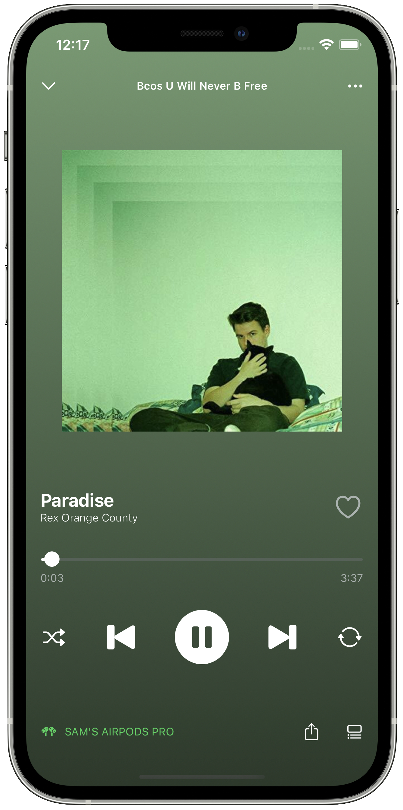

<!doctype html>
<html lang="en">

	<head>
		<meta charset="utf-8">
		<link rel="stylesheet" href="../reveal.js/dist/reset.css">
		<link rel="stylesheet" href="../reveal.js/dist/reveal.css">
		<link rel="stylesheet" href="../reveal.js/dist/theme/black.css">
        <link rel="stylesheet" href="../reveal.js/plugin/highlight/monokai.css">

        <title>Introduction to iOS Development</title>
	</head>

	<body>
		<div class="reveal">
			<div class="slides">
                <!-- Slides are separated by regexp matching newline + three dashes + newline, vertical slides identical but two dashes -->
                <section data-markdown data-separator="^\n---\n$" data-separator-vertical="^\n--\n$">
                    <script type="text/template">
    
## Introduction to iOS Development
App Lab x App Team Carolina

---

## Who is Sam Shi ("Shy")?

- Chief Academic Officer at App Team Carolina

- Junior Computer Science B.S. & Music Minor

- Learning Assistant - COMP 426

--

## My iOS Experience


---

## SwiftUI
- A framework for making apps Apple devices.

- Released in 2019.

--

## Mindset
- Declarative, reactive programming framework.

- View is a function of state.

- Prevents mismatches between your view and data.

---

## Basic SwiftUI Views
- The building blocks we use to make user interfaces.

--

## Text

Takes in a string and renders it on screen.

```swift
// Initializer
extension Text {
    public init<S>(_ content: S) where S : StringProtocol
}

// Example
Text("Welcome to SwiftUI!")
```

--

## Image (custom image)

1. Add an image to our Asset Catalog in `assets.xcassets`

2. Give it a reasonable name and copy to clipboard.

3. Use the `Image(_ name: String)` initializer to render it on screen.

```
// Initializer
extension Image {
    public init(_ name: String, ...)
}

// Example
Image("app-lab-logo")
```

--

## Image (SF Symbol)

Since iOS 13, the operating system provides a huge icon library that we are free to use.

- Very easy to obtain icons this way. No need to download icon sets.

- Common icons used across many iOS applications.

- Users know these icons. Share icon as an example.

```
// Initializer
extension Image {
    public init(systemName: String)
}

// Example
Image(systemName: "square.and.arrow.up")
```

---

## SwiftUI Layout

There are only 3 ways to layout views in SwiftUI.

These are completely composable, so you can have a `VStack` of `HStack`s, etc.

- `VStack` - vertical stack

- `HStack` - horizontal stack

- `ZStack` - (zertical?) stack on the Z axis

---

## View Modifiers

View modifiers allow us to modify the content in our applications.

```swift
Text("Modified Text")
	.font(.title)
	.fontWeight(.bold)
	.padding()
	.background(Color.blue)
	.cornerRadius(10)
```
--

## How do they work?

View modifiers ***wrap*** the original view in a new, modified view.

```swift
// Printing View Type

let modified = VStack { Text("Hello, World") }.padding()
let type = type(of: modified)

print(type) /* ModifiedContent<VStack<Text>, _PaddingLayout> */
```
	</script>
</section>

<section data-markdown data-separator="^\n---\n$" data-separator-vertical="^\n--\n$">
	<script type="text/template">
		<div style="display: flex; justify-content: space-around;">
			

<div style="margin-left: 20px; margin-top: 20px">
<h2>SwiftUI Demonstration - Spotify</h2>
<p>We'll be recreating the basic user interface of Spotify music player.</p>
<br/>
<p>If you'd like to follow along, clone or download the starter code here: <br/> <a href="https://github.com/samrshi/appathon-ios-workshop">https://github.com/samrshi/appathon-ios-workshop</a></p>
<br/>
<p>To follow along, you'll need Xcode, Apple's app development IDE.</p>
<p>The download takes a very long time, so there's absolutely nothing wrong with just watching.</p>
</div>
		</div>
	</script>
</section>

            </div>
		</div>

		<script src="../reveal.js/dist/reveal.js"></script>
        <script src="../reveal.js/plugin/markdown/markdown.js"></script>
        <script src="../reveal.js/plugin/highlight/highlight.js"></script>
        <script src="../reveal.js/plugin/notes/notes.js"></script>
        <script src="../reveal.js/plugin/math/math.js"></script>

		<script>
			Reveal.initialize({
				controls: true,
				progress: true,
				history: true,
				center: true,
				plugins: [ RevealMarkdown, RevealHighlight, RevealNotes, RevealMath.KaTeX ]
			});
		</script>
	</body>
</html>
